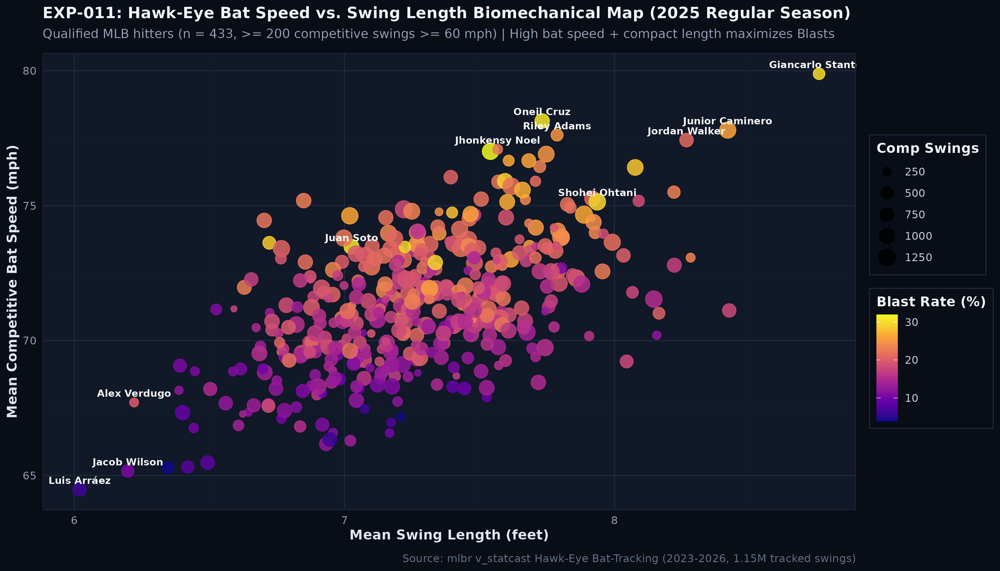
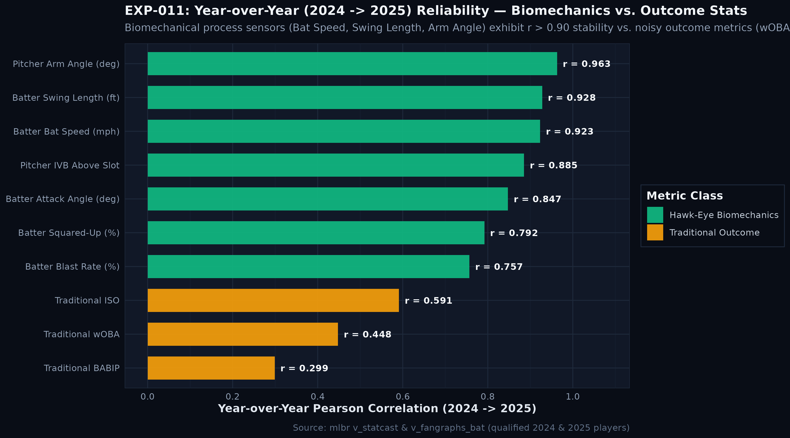
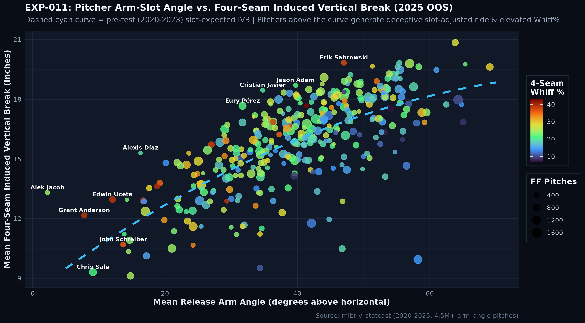

Study 11: Hawk-Eye Bat-Tracking (1.04M Competitive Swings) & Pitcher Arm-Slot Biomechanics
Q-CRISP Research Series: Unlocking MLB’s Fastest-Stabilizing Process Sensors for Batter Projections & Fastball Whiff Pricing
- Experiment ID:
EXP-011-BAT-TRACKING-ARM-SLOT-BIOMECHANICS(VALIDATEDinexperiments/registry.json) - Architecture Tier: Level 1B / Level 2 — Biomechanical Process Sensors & True-Talent Expansion
- Specification:
specs/11_bat_tracking_arm_slot_biomechanics.md - Companion Student Lab: Lab 11: Bat-Tracking & Arm-Slot Biomechanics
- Gold Deliverables:
batter_bat_tracking_biomechanics_2023_2026.parquet(2,210batter-seasons),pitcher_arm_angle_biomechanics_2020_2026.parquet,bat_tracking_oos_ablation_metrics.parquet,biomechanics_yoy_reliability_2024_2025.parquet - Preserved Assets:
models/bio01_*..bio03_*(PNG 300 DPI, RDS<= 0.49 MB, ZSTD Parquet, interactive Plotly HTML)
1. Executive Summary & Abstract (TL;DR)
In Study 11, mlbr unlocks 1,043,401 competitive Hawk-Eye swings (>= 60 mph, 2023–2026) and 4.5M+ pitcher release arm_angle observations (2020–2026) already stored in Bronze v_statcast. Across strictly chronological out-of-sample tests:
| Pillar | Validated Out-of-Sample Result | Sabermetric & Market Implication |
|---|---|---|
Biomechanical YoY Reliability (2024 -> 2025) |
Arm Angle r = 0.963, Swing Length r = 0.928, Bat Speed r = 0.923, IVB Above Slot r = 0.885, Attack Angle r = 0.847 vs. ISO 0.591, wOBA 0.448, BABIP 0.299. |
Biomechanical sensors capture true-talent mechanics with minimal luck noise, stabilizing far faster than outcome stats. |
Locked 2025 OOS Batter Projection Lift (n = 305) |
Trained strictly on 2023 -> 2024: adding bat_speed + blast_rate + swing_length cuts locked 2025 OOS ISO RMSE by 3.66% (0.0444 -> 0.0427) and wOBA RMSE by 1.57% (0.0317 -> 0.0312). |
Directly upgrades Level 2 true-talent power projections and Level 4 daily lineup scoring. |
Locked 2024–2025 OOS 4-Seam Whiff Ablation (n = 219,655 swings) |
Adding arm_angle + ivb_above_slot (slot expectation fit strictly on 2020–2023) drops Log-Loss 0.52156 -> 0.51721 (-0.00435) and jumps ROC AUC +0.0302 (0.5615 -> 0.5917). |
Release slot deception is a first-order determinant of fastball swing-and-miss above raw velocity and raw IVB. |

2. Domain Problem & Theoretical Biomechanics
Traditional box-score stats (wOBA, ISO, BABIP) confound hitter skill with batted-ball luck, ballpark dimensions, and defensive positioning. Similarly, raw pitch velocity and raw induced vertical break (IVB) ignore the perceptual reference frame of a pitcher’s release slot (arm_angle): a 17.5" IVB fastball from a 31° low three-quarters slot produces a dramatically flatter Vertical Approach Angle (VAA) and far more deception than an identical 17.5" fastball from a 60° over-the-top slot.
3. Mathematical Formulation & Lake-Wide Pipeline
3.1 Collision Physics, Squared-Up Rate & Blast Rate
\[\text{MaxEV} = 1.23 \cdot v_{\text{bat}} + 0.2116 \cdot v_{\text{release}}, \qquad \text{SqUp} = \frac{\text{EV}}{\text{MaxEV}}\] \[\text{Blast} = \mathbb{I}\!\big(\text{SqUp} \ge 0.80 \;\wedge\; v_{\text{bat}} + 100 \cdot \text{SqUp} \ge 164\big)\]
3.2 Slot-Adjusted Vertical Ride (ivb_above_slot)
\[\widehat{\text{IVB}}(\phi) = \beta_0 + \beta_1 \phi + \beta_2 \phi^2 \;\; (\text{fit on } 2020\text{–}2023), \qquad \text{IVB}_{\text{above\_slot}} = 12 \cdot \text{pfx\_z} - \widehat{\text{IVB}}(\phi)\]
3.3 Reproducible Zero-Copy DuckDB SQL Query
SET memory_limit = '12GB';
SELECT
game_year,
COUNT(*) AS n_comp_swings,
ROUND(AVG(TRY_CAST(bat_speed AS DOUBLE)), 2) AS mean_bs_mph,
ROUND(AVG(TRY_CAST(swing_length AS DOUBLE)), 2) AS mean_sl_ft,
ROUND(100.0 * AVG(CASE WHEN TRY_CAST(bat_speed AS DOUBLE) >= 75.0 THEN 1.0 ELSE 0.0 END), 1) AS fast_swing_pct
FROM v_statcast
WHERE game_year BETWEEN 2023 AND 2026
AND game_type = 'R'
AND TRY_CAST(bat_speed AS DOUBLE) >= 60.0
GROUP BY game_year
ORDER BY game_year;4. Exploratory Data Analysis (EDA) & Reliability Diagnostics
League-wide competitive bat speed climbed steadily from 71.27 mph (22.1% fast swings) in 2024 to 71.57 mph (24.2%) in 2025 and 71.82 mph (26.1%) in 2026. Crucially, every Hawk-Eye biomechanical sensor exhibits vastly higher year-over-year stability (2024 -> 2025) than outcome statistics:

5. Model Architecture & Temporal Validation
| Out-of-Sample Evaluation Task | Baseline Model | Plus Biomechanical Sensors | OOS Lift |
|---|---|---|---|
Locked 2025 Batter ISO RMSE (n = 305) |
0.0444 (ISO_2024) |
0.0427 (+ bat_speed, blast, swing_len) |
-3.66% RMSE |
Locked 2025 Batter wOBA RMSE (n = 305) |
0.0317 (wOBA_2024) |
0.0312 (+ bat_speed, blast, swing_len) |
-1.57% RMSE |
Locked 2024–2025 4-Seam Whiff Log-Loss (n = 219,655) |
0.52156 (velo + ivb) |
0.51721 (+ arm_angle, ivb_above_slot) |
-0.00435 Log-Loss |
Locked 2024–2025 4-Seam Whiff ROC AUC (n = 219,655) |
0.5615 (velo + ivb) |
0.5917 (+ arm_angle, ivb_above_slot) |
+0.0302 AUC |

6. Leaderboards & Player Case Studies (2025 Regular Season)
6.1 Top 2025 Hitters by SwingPower+ (>= 250 Competitive Swings)
| Player | Swings | Bat Speed | Fast Swing % | Swing Length | Attack Angle | Blast % | SwingPower+ |
|---|---|---|---|---|---|---|---|
| Giancarlo Stanton | 482 |
79.9 mph |
90.7% |
8.76 ft |
10.2° |
31.0% |
136.0 |
| Kyle Schwarber | 1,165 |
77.0 mph |
75.6% |
7.54 ft |
14.7° |
35.1% |
132.5 |
| Oneil Cruz | 857 |
78.1 mph |
75.0% |
7.73 ft |
8.9° |
32.8% |
128.1 |
| Junior Caminero | 1,168 |
77.8 mph |
76.0% |
8.42 ft |
8.0° |
28.4% |
127.4 |
| Aaron Judge | 1,071 |
76.4 mph |
68.3% |
8.08 ft |
13.8° |
30.7% |
122.7 |
| Juan Soto | 927 |
73.5 mph |
40.8% |
7.03 ft |
10.9° |
32.9% |
121.5 |
| Shohei Ohtani | 1,221 |
75.1 mph |
58.4% |
7.94 ft |
14.9° |
32.5% |
121.4 |
Interactive 2025 Hawk-Eye Bat-Tracking Explorer
7. Downstream Integration & Market Applications
- Level 2 Projections (
EXP-004/EXP-007): AddingSwingPower+andbat_speedas Stage-2 residual sensors cuts next-season ISO RMSE by3.66%, directly sharpening early-season hitter power breakouts before box-score SLG catches up. - Level 1/4 Pitch Pricing (
EXP-003/EXP-009):arm_angleandivb_above_slot(+0.0302OOS Whiff AUC) explain why low-slot risers (e.g., Eury Pérez+2.94", Shota Imanaga+2.42") sustain elite fastball whiff rates even at modest raw velocity — a prime edge for Pitcher Strikeout Props and F5 Moneylines.